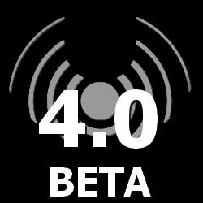
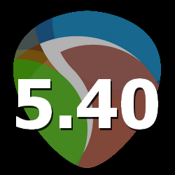
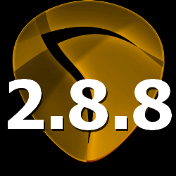

Lua-functions for Reaper
The Ultraschall-Extension is intended to be an extension for the DAW Reaper, that enhance it with podcast functionalities. Most DAWs are intended to be used by musicians, for music, but podcasters have their own needs to be fulfilled. In fact, in some places their needs differ from the needs of a musician heavily.
The Ultraschall-Framework itself is intended to include a set of functions, that help creating such functionalities. By giving programmers helper functions for cough-buttons, chapter-marker management, giving additional ways to navigate through a project and to get access to each and every corner of Reaper. That way, extending Ultraschall is more comfortable to do.
From Ultraschall 4.0 on, the framework will be delivered together with the installation-package of Ultraschall. Up until then, you can download the latest versions of it here on this page as a zip-archive.
DOWNLOADLINK for Ultraschall Framework 4.0 - Beta1
Requirements: Reaper 5.40 and SWS extension 2.8.8
Step 1: When you've downloaded the archive, open it. You'll find in it a directory called "Scripts", a license-file, this documentation and the file "reaper-kb.txt".
Step 2: Copy the files, that are inside the "Scripts"-directory into the Scripts-directory of your Reaper-Ressources-Folder.
Step 3: Open the file "reaper-kb.ini" from the ressources-folder of Reaper with a texteditor. Open the file "reaper-kb.txt" from the downloaded archive as well in a texteditor.
Step 4: Copy the entries from the "reaper-kb.TXT" and paste them into the "reaper-kb.INI" file AFTER the SCR-Entries and BEFORE the KEY entries. Save the file.
Step 5: Start Reaper.
If you want to use the Ultraschall Framework-Functions in your script, just add the following lines:
-- Ultraschall Functions-API
-- include the following lines
US_Functions="ON" -- Turn OFF, if you don't want the Functions-API
-- Turn ON, if you want the Functions-API
US_DataStructures="ON" -- Turn OFF, if you don't want the DataStructures-API
-- Turn ON, if you want the DataStructures-API
US_GraphicsFunctionsLibrary="ON" -- Turn OFF, if you don't want the Graphics-Library-API
-- Turn ON, if you want the Graphics-Library-API
US_SoundFunctionsLibrary="ON" -- Turn OFF, if you don't want the Graphics-Library-API
-- Turn ON, if you want the Graphics-Library-API
US_VideoFunctionsLibrary="ON" -- Turn OFF, if you don't want the Graphics-Library-API
-- Turn ON, if you want the Graphics-Library-API
US_BetaFunctions="OFF" -- Only has an effect, if ultraschall_functions_api_Beta.lua exists in Scripts-folder
-- Turn OFF, if you don't want BETA-Api-Functions
-- Turn ON, if you want BETA-Api-Functions
local info = debug.getinfo(1,'S');
script_path = info.source:match[[^@?(.*[\/])[^\/]-$]]
US_API = dofile(script_path .. "ultraschall_api.lua")
As you can see, the Framework contains several parts, that you can turn ON or OFF, depending on if you need them or not. Though: only US_Functions is implemented yet, the others will follow over time.
Now that you've included the necessary API-lines, we can test, if the framework was sucessfully installed by calling the function:
ultraschall.ApiTest()
directly under(!) the ultraschall.API-line. Run the script by saving it with Ctrl-S. If everything worked right, several messageboxes will appear that tell you, if the API-works and which of the API-parts you've turned on or off.
Voila: now you can program the Ultraschall-Framework.
Before new functions will be released with a next Ultraschall-Release, they are in beta-stage. They will be available at DOWNLOADLINK. Just download the archive, open it, put the .lua-scripts into the "Scripts"-folder with the ressources-folder of Reaper.
Voila, you can use these new Beta-Functions, if you turned them ON in the variable "US_BetaFunctions" (see "How to use the API in your LUA-Script").
Keep in mind: they are beta. They will change behavior, maybe change their parameters or disappear at all in the final release!
Bugreporting, Feature-requests and all the rest
If you find any bugs or itches and want to report them, I suggest you the following procedure:
a) Make notes of: what operating-system you use(Mac, Win, Linux), which Reaper-version, which SWS-Version and which Ultraschall-Framework-Version.
b) Write down, what you wanted to do, what you expected to happen and what has happened instead. Make it as detailed as possible(a screenvideo i.e. would be perfect), as more information helps to find out, where the problem lies. It's always better to write too much, than the other way around.
c) Send these notes as eMail: lspmp3@yahoo.de(for framework-related stuff only!!) or go to
sendegate.de into the Ultraschall-section.
Bugreports that contain only a "it doesn't work" and "I expected it to work" will be ignored gracefully ;)
If you have feature-requests, we have open ears. Keep in mind, not everything you find a good idea actually is one. So we may or may not take on your idea, change and rework it into a way, that benefits all, not just your particular use-case. When in doubt, just try it!
Keep also in mind: there are limitations. Some cool features we all would love to have, simply aren't implementable. Que sera, sera...
For your comments just send a mail at: lspmp3@yahoo.de(for framework-related stuff only!!) or go to sendegate.de into the Ultraschall-section.
PS: If you know how to implement impossible things or do things better than the current implementation, you are welcome to donate your improved codes. :)
################################################################################
#
# Copyright (c) 2014-2017 Ultraschall (http://ultraschall.fm)
#
# Permission is hereby granted, free of charge, to any person obtaining a copy
# of this software and associated documentation files (the "Software"), to deal
# in the Software without restriction, including without limitation the rights
# to use, copy, modify, merge, publish, distribute, sublicense, and/or sell
# copies of the Software, and to permit persons to whom the Software is
# furnished to do so, subject to the following conditions:
#
# The above copyright notice and this permission notice shall be included in
# all copies or substantial portions of the Software.
#
# THE SOFTWARE IS PROVIDED "AS IS", WITHOUT WARRANTY OF ANY KIND, EXPRESS OR
# IMPLIED, INCLUDING BUT NOT LIMITED TO THE WARRANTIES OF MERCHANTABILITY,
# FITNESS FOR A PARTICULAR PURPOSE AND NONINFRINGEMENT. IN NO EVENT SHALL THE
# AUTHORS OR COPYRIGHT HOLDERS BE LIABLE FOR ANY CLAIM, DAMAGES OR OTHER
# LIABILITY, WHETHER IN AN ACTION OF CONTRACT, TORT OR OTHERWISE, ARISING FROM,
# OUT OF OR IN CONNECTION WITH THE SOFTWARE OR THE USE OR OTHER DEALINGS IN
# THE SOFTWARE.
#
################################################################################
Reaper and the Reaper-Logo are trademarks of cockos inc and can be found at reaper.fm
The SWS-logo has been taken from the SWS-extension-project, which can be found at sws-extension.org

ultraschall.ApiTest()
Displays messages to show, which parts of the Ultraschall-API are turned on and which are turned off.
ultraschall.Msg(string val)
prints a message to the Reaper Console
parameter:
val - your message as a string
string path = ultraschall.GetPath(string str, string sep)
returns the path of a filename-string
returns -1 if it doesn't work
parameter:
str - the path with filename you want to process
sep - a seperator, with which the function knows, how to seperate filename from path
string partial_string = ultraschall.GetPartialString(string str, string sep1, string sep2)
returns the part of a filename-string between sep1 and sep2
returns -1 if it doesn't work, no sep1 or sep2 exist
parameters:
str-string to be processed
sep1- seperator on the "left" side of the partial string
sep2 - seperator on the "right" side of the partial string
string time_string = ultraschall.SecondsToTime(number pos)
converts timeposition in seconds(pos) to a timestring (h)hh:mm:ss.mss
parameter:
pos - timeposition in seconds
number position = ultraschall.TimeToSeconds(string timestring)
converts timestring (h)hh:mm:ss.mss to a time in seconds(pos)
returns -1 if the timestring is invalid
parameter:
timestring - string of the time in the format hh:mm:ss.mss. More positions in hours(i.e. hhhh) and milliseconds(i.e. mssss) are possible.
ultraschall.RunCommand(string actioncommand_id)
runs a command by its ActionCommandID(instead of the CommandID-number)
parameter:
actioncommand_id - the ActionCommandID of the Command/Script/Action you want to run.
boolean retval = ultraschall.ToggleStateAction(integer section, string actioncommand_id, integer state)
Toggles state of an action using the actioncommand_id(instead of the CommandID-number)
returns current state of the action after toggling
If you have a button associated, you'll need to use ultraschall.RefreshToolbar_Action("_ActionCommandID") or reaper.RefreshToolbar(commandid_nr) after it!
parameters:
section - section (usually 0 for main)
actioncommand_id - the ActionCommandID of the Action you'll want to toggle
state - 0 for off, 1 for on
ultraschall.RefreshToolbar_Action(integer section, string actioncommand_id)
Refreshes a toolbarbutton with an ActionCommandID(instead of the CommandID-number)
parameters:
section - section
actioncommand_id - ActionCommandID of the action, associated with the toolbarbutton
boolean retval = ultraschall.ToggleStateButton(integer section, string actioncommand_id, integer state)
Toggles state and refreshes the button of an actioncommand_id
section - section (usually 0 for main)
actioncommand_id - the ActionCommandID of the Action you'll want to toggle
state - 0 for off, 1 for on
csv retval = ultraschall.Notes2CSV()
Gets the project's notes and returns it as a CSV.
returns a CSV of the project's notes.
string values = ultraschall.CSV2Line (string csv_line)
converts a string of csv-values into a string with all values and without the ,-seperators
returns a string
parameter:
csv_line - a string with all the csv-values.
array individual_values = ultraschall.CSV2IndividualLines(string csv_line)
convert a csv-string to an array of the individual values
returns an array.
parameter:
csv_line - a string as a csv, with all values included and seperated by ,
integer combined_colorvalue = ultraschall.RGB2Num(integer red, integer green, integer blue)
convert r,g,b into one integer-value that will be returned.
parameters:
red - red-value betweeen 0 and 255. Can be negative to creative colorvalues for subtraction
green - green-value betweeen 0 and 255. Can be negative to creative colorvalues for subtraction
blue - blue-value betweeen 0 and 255. Can be negative to creative colorvalues for subtraction
integer graycolor = ultraschall.RGB2Grayscale(red,green,blue)
converts rgb to a grayscale value. Works native on Mac as well on Windows, no color conversion needed.
parameters:
red - red-color-value 0-255
green - green-color-value 0-255
blue - blue-color-value 0-255
integer retval = ultraschall.RoundNumber(number number)
returns a rounded value of the parameter number. .5 and higher rounds up, lower than .5 round down.
parameter:
number - the floatingpoint number, you'd like to have rounded.
boolean = ultraschall.IsItemInTrack(tracknumber, itemIDX)
checks, whether a given item is part of the track tracknumber
returns true, if the itemIDX is part of track tracknumber, false if not, -1 if no such itemIDX or Tracknumber available
parameters:
itemIDX - the number of the item to check of
tracknumber - the number of the track to check in
integer retval = ultraschall.WriteValueToFile(string filename_with_path, string/integer/number value)
Writes value to filename_with_path. Will replace any previous content of the file! Returns -1 in case of failure, 1 in case of sucess.
Keep in mind, that you need to escape \ by writing \\, or it will not work
parameters:
filename_with_path - the filename with it's path
value - the value to export, can be a long string that includes newlines and stuff. nil is not allowed!
ultraschall.NumberRangeAsCsvOfNumbers(integer firstnumber, integer lastnumber, integer step)
returns a string with the all numbers from firstnumber to lastnumber, seperated by a ,
e.g. firstnumber=4, lastnumber=8 -> 4,5,6,7,8
firstnumber - the number, with which the string starts
lastnumber - the number, with which the string ends
step - how many numbers shall be skipped inbetween. Can lead to a different lastnumber, if not 1 ! nil=1
boolean = ultraschall.SetUSExternalState(section, key, value)
stores values into ultraschall.ini. Returns true if sucessful, false if unsucessful.
parameters:
section - the section of the ultraschall.ini. An = is not allowed!
key - the key within the section
value - the value you want to set.
integer value_length, string value = ultraschall.GetUSExternalState(section, key)
gets a value from ultraschall.ini. Returns length of value(integer) and the value itself(string).
parameters:
section - the section of the ultraschall.ini.
key - the key of which you want it's value.
integer section_count = ultraschall.CountUSExternalState_sec()
returns the number of [sections] in the ultraschall.ini
integer key_count = ultraschall.CountUSExternalState_key(section)
returns the number of keys in the given [section] in ultraschall.ini
parameter:
section - the section of the ultraschall.ini, of which you want the number of keys.
string section_name = ultraschall.EnumerateUSExternalState_sec(number)
returns name of the numberth section in ultraschall.ini or nil if invalid
parameter:
number - the number of section, whose name you want to know
string key_name = ultraschall.EnumerateUSExternalState_key(section, number)
returns name of a numberth key within a section in ultraschall.ini or nil if invalid or not existing
parameters:
section - the section within ultraschall.ini, where the key is stored.
number - the number of the key, whose name you want to know.
string trackname = ultraschall.GetTrackName(integer tracknumber)
returns name of the track.
parameter:
tracknumber - number of the track, beginning with 0
string PeakColorState = ultraschall.GetTrackPeakColorState(integer tracknumber)
returns state of the PeakColor-number, which is the trackcolor. Will be returned as string, to avoid losing trailing or preceding zeros.
parameter:
tracknumber - number of the track, beginning with 0
number BeatState = ultraschall.GetTrackBeatState(integer tracknumber)
returns Track-BeatState.
BeatState - Track Time base
-1 - Project time base
0 - Time
1 - Beats position, length, rate
2 - Beats position only
parameter:
tracknumber - number of the track, beginning with 0
integer AutoRecArmState = ultraschall.GetTrackAutoRecArmState(integer tracknumber)
returns if the track is in AutoRecArm, when selected. Returns nil if not.
parameter:
tracknumber - number of the track, beginning with 0
integer Mute, integer Solo, integer SoloDefeat = ultraschall.GetTrackMuteSoloState(integer tracknumber)
returns states of Mute and Solo-Buttons.
Mute set to 0 - Mute off, 1 - Mute On
Solo set to 0 - Solo off, 1 - Solo ignore routing, 2 - Solo on
SoloDefeat set to 0 - off, 1 - on
parameter:
tracknumber - number of the track, beginning with 0
number IPhase = ultraschall.GetTrackIPhaseState(integer tracknumber)
returns state of the IPhase. If the Phase-button is pressed, it will return 1, else it will return 0.
parameter:
tracknumber - number of the track, beginning with 0
integer busstate1, integer busstate2 = ultraschall.GetTrackIsBusState(integer tracknumber)
returns busstate of the track, means: if it's a folder track
Appliable to the Master track as well, though it makes no sense, as you can't add sub/foldertracks to the Master-Track.
track is no folder: busstate1=0, busstate2=0
track is a folder: busstate1=1, busstate2=1
track is a folder but view of all subtracks not compactible: busstate1=1, busstate2=2
track is last track in folder(no tracks of subfolders follow): busstate1=2, busstate2=-1
parameter:
tracknumber - number of the track, beginning with 0
number BusCompState1, number BusCompState2 = ultraschall.GetTrackBusCompState(integer tracknumber)
returns BusCompState, if the tracks in a folder are compacted or not.
BusCompState1:
0 - no compacting
1 - compacted tracks
2 - minimized tracks
BusCompState2:
0 - unknown
1 - unknown
parameter:
tracknumber - number of the track, beginning with 0
integer MCPvisible, number MCP_FX_visible, number MCPTrackSendsVisible, integer TCPvisible, number ShowInMix5, number ShowInMix6, number ShowInMix7, number ShowInMix8 = ultraschall.GetTrackShowInMixState(integer tracknumber)
returns Show in Mix-state.
MCPvisible - 0 invisible, 1 visible
MCP_FX_visible - 0 visible, 1 FX-Parameters visible, 2 invisible
MCPTrackSendsVisible - 0 & 1.1 and higher TrackSends in MCP visible, every other number makes them invisible
TCPvisible - 0 track is invisible in TCP, 1 track is visible in TCP
ShowInMix5 - unknown
ShowInMix6 - unknown
ShowInMix7 - unknown
ShowInMix8 - unknown
parameter:
tracknumber - number of the track, beginning with 0
integer FreeModeState = ultraschall.GetTrackFreeModeState(integer tracknumber)
returns if the track has track free item positioning enabled(1) or not(0).
parameter:
tracknumber - number of the track, beginning with 0
integer ArmState, integer InputChannel, integer MonitorInput, integer RecInput, integer MonitorWhileRec, integer presPDCdelay, integer RecordingPath = ultraschall.GetTrackRecState(integer tracknumber)
returns Track Rec State.
ArmState - returns 1(armed) or 0(unarmed)
InputChannel - returns the InputChannel
-1 - No Input
1-16(more?) - Mono Input Channel
1024 - Stereo Channel 1 and 2
1026 - Stereo Channel 3 and 4
1028 - Stereo Channel 5 and 6
...
5056 - Virtual MIDI Keyboard all Channels
5057 - Virtual MIDI Keyboard Channel 1
...
5072 - Virtual MIDI Keyboard Channel 16
5088 - All MIDI Inputs - All Channels
5089 - All MIDI Inputs - Channel 1
...
5104 - All MIDI Inputs - Channel 16
Monitor Input - 0 monitor off, 1 monitor on, 2 monitor on tape audio style
RecInput - returns rec-input type
0 input(Audio or Midi),
1 Record Output Stereo
2 Disabled, Input Monitoring Only
3 Record Output Stereo, Latency Compensated
4 Record Output MIDI
5 Record Output Mono
6 Record Output Mono, Latency Compensated
7 MIDI overdub,
8 MIDI replace,
9 MIDI touch replace,
10 Record Output Multichannel
11 Record Output Multichannel, Latency Compensated
12 Record Input Force Mono
13 Record Input Force Stereo
14 Record Input Force Multichannel
15 Record Input Force MIDI
16 MIDI latch replace
MonitorWhileRec - Monitor Trackmedia when recording, 0 is off, 1 is on
presPDCdelay - preserve PDC delayed monitoring in media items
RecordingPath - 0 Primary Recording-Path only, 1 Secondary Recording-Path only, 2 Primary Recording Path and Secondary Recording Path(for invisible backup)
parameter:
tracknumber - number of the track, beginning with 0
integer VUState = ultraschall.GetTrackVUState(integer tracknumber)
returns VUState. 0 if MultiChannelMetering is off, 2 if MultichannelMetering is on, 3 Metering is off
parameter:
tracknumber - number of the track, beginning with 0
integer height, number heightstate2 = ultraschall.GetTrackHeightState(integer tracknumber)
returns height of the track.
height - 24 up to 443
heightstate2 - 0 - use height, 1 - compact the track and ignore the height
parameter:
tracknumber - number of the track, beginning with 0
number Track_INQ1, number Track_INQ2, number Track_INQ3, number Track_INQ4, number Track_INQ5, number Track_INQ6, number Track_INQ7, number Track_INQ8 = ultraschall.GetTrackINQState(integer tracknumber)
returns INQ-state of the track.
parameter:
tracknumber - number of the track, beginning with 0
integer channelnumber = ultraschall.GetTrackNChansState(integer tracknumber)
returns the number of channels for this track, as set in the routing.
parameter:
tracknumber - number of the track, beginning with 0
integer FXState = ultraschall.GetTrackBypFXState(integer tracknumber)
returns the off/bypass(0) or nobypass(1) state of the FX-Chain
parameter:
tracknumber - number of the track, beginning with 0
integer TrackPerfState = ultraschall.GetTrackPerfState(integer tracknumber)
returns TrackPerformance-state
0 - allow anticipative FX + allow media buffering
1 - allow anticipative FX + prevent media buffering
2 - prevent anticipative FX + allow media buffering
3 - prevent anticipative FX + prevent media buffering
settings seem to repeat with higher numbers (e.g. 4(like 0) - allow anticipative FX + allow media buffering)
parameter:
tracknumber - number of the track, beginning with 0
integer MidiOutState = ultraschall.GetTrackMIDIOutState(integer tracknumber)
returns MIDI_Out-State, as set in the Routing-Settings
-1 no output
416 - microsoft GS wavetable synth - send to original channels
417-432 - microsoft GS wavetable synth - send to channel state minus 416
-31 - no Output, send to original channel 1
-16 - no Output, send to original channel 16
parameter:
tracknumber - number of the track, beginning with 0
integer MainSendOn, integer ParentChannels = ultraschall.GetTrackMainSendState(integer tracknumber)
returns, if Main-Send is on(1) or off(0) and the ParentChannels(0-63), as set in the Routing-Settings.
parameter:
tracknumber - number of the track, beginning with 0
integer GroupState_as_Flags, array IndividualGroupState_Flags = ultraschall.GetTrackGroupFlagsState(integer tracknumber)
returns the state of the group-flags, as set in the menu Track Grouping Parameters. Returns a 23bit flagvalue as well as an array with 32 individual 23bit-flagvalues. You must use bitoperations to get the individual values.
GroupState_as_Flags - returns a flagvalue with 23 bits, that tells you, which grouping-flag is set in at least one of the 32 groups available.
returns -1 in case of failure
the following flags are available:
2^0 - Volume Master
2^1 - Volume Slave
2^2 - Pan Master
2^3 - Pan Slave
2^4 - Mute Master
2^5 - Mute Slave
2^6 - Solo Master
2^7 - Solo Slave
2^8 - Record Arm Master
2^9 - Record Arm Slave
2^10 - Polarity/Phase Master
2^11 - Polarity/Phase Slave
2^12 - Automation Mode Master
2^13 - Automation Mode Slave
2^14 - Reverse Volume
2^15 - Reverse Pan
2^16 - Do not master when slaving
2^17 - Reverse Width
2^18 - Width Master
2^19 - Width Slave
2^20 - VCA Master
2^21 - VCA Slave
2^22 - VCA pre-FX slave
IndividualGroupState_Flags - returns an array with 23 entries. Every entry represents one of the GroupState_as_Flags, but it's value is a flag, that describes, in which of the 32 Groups a certain flag is set.
e.g. If Volume Master is set only in Group 1, entry 1 in the array will be set to 1. If Volume Master is set on Group 2 and Group 4, the first entry in the array will be set to 10.
refer to the upper GroupState_as_Flags list to see, which entry in the array is for which set flag, e.g. array[22] is VCA pre-F slave, array[16] is Do not master when slaving, etc
As said before, the values in each entry is a flag, that tells you, which of the groups is set with a certain flag. The following flags determine, in which group a certain flag is set:
2^0 - Group 1
2^1 - Group 2
2^2 - Group 3
2^3 - Group 4
...
2^30 - Group 31
2^31 - Group 32
parameter:
tracknumber - number of the track, beginning with 0
integer lockedstate = ultraschall.GetTrackLockState(integer tracknumber)
returns, if the track-controls of this track are locked(1) or not(0).
parameter:
tracknumber - number of the track, beginning with 0
string TCP_Layoutname, string MCP_Layoutname = ultraschall.GetTrackLayoutNames(integer tracknumber)
returns the current selected layouts for TrackControlPanel and MixerControlPanel for this track as strings. Returns nil, if default is set.
parameter:
tracknumber - number of the track, beginning with 0
integer automodestate = ultraschall.GetTrackAutomodeState(integer tracknumber)
returns, if the automation-mode for envelopes of this track is set to 0 - trim/read, 1 - read, 2 - touch, 3 - write, 4 - latch.
parameter:
tracknumber - number of the track, beginning with 0
string filename_with_path = ultraschall.GetTrackIcon_Filename(integer tracknumber)
returns the filename with path for the track-icon of the current track. Returns nil, if no trackicon has been set.
parameter:
tracknumber - number of the track, beginning with 0
integer MidiInputChanMap_state = ultraschall.GetTrackMidiInputChanMap(integer tracknumber)
returns the state of the MIDIInputChanMap for the current track, as set in the Input-MIDI->Map Input to Channel menu. 0 for channel 1, 2 for channel 2, etc. Nil, if not existing.
parameter:
tracknumber - number of the track, beginning with 0
integer LinkedToMidiChannel, integer unknown = ultraschall.GetTrackMidiCTL(integer tracknumber)
returns linked to Midi channel and an unknown value. Nil if not existing.
parameter:
tracknumber - number of the track, beginning with 0
boolean retval = ultraschall.SetTrackName(integer tracknumber, string name)
Set the name of a track.
parameters:
tracknumber - number of the track, beginning with 0
name - new name of the track
boolean retval = SetTrackPeakColorState(integer tracknumber, integer colorvalue)
Set the color of the track.
parameters:
tracknumber - number of the track, beginning with 0
colorvalue - the color for the track
boolean retval = ultraschall.SetTrackBeatState(integer tracknumber, integer beatstate)
Set the timebase for a track.
parameters:
tracknumber - number of the track, beginning with 0
beatstate - tracktimebase for this track; -1 - Project time base, 0 - Time, 1 - Beats position, length, rate, 2 - Beats position only
boolean retval = ultraschall.SetTrackAutoRecArmState(integer tracknumber, integer autorecarmstate)
Set the AutoRecArmState for a track.
parameters:
tracknumber - number of the track, beginning with 0
autorecarmstate - autorecarmstate - 1 - autorecarm on, <> than 1 - off
boolean retval = ultraschall.SetTrackMuteSoloState(integer tracknumber, integer Mute, integer Solo, integer SoloDefeat)
Set the AutoRecArmState for a track.
parameters:
tracknumber - number of the track, beginning with 0
Mute - 0 - Mute off, <> than 0 - on
Solo - 0 - off, <> than 0 - on
Solo Defeat - 0 - off, <> than 0 - on
boolean retval = ultraschall.SetTrackIPhaseState(integer tracknumber, integer iphasestate)
Sets IPhase, the Phase-Buttonstate of the Track.
parameters:
tracknumber - number of the track, beginning with 0
iphasestate - 0 - off, <> than 0 - on
boolean retval = ultraschall.SetTrackIsBusState(integer tracknumber, integer busstate1, integer busstate2)
Sets ISBUS-state of the Track; if it's a folder track.
parameter-settings:
tracknumber - number of the track, beginning with 0
busstate1=0, busstate2=0 - track is no folder
busstate1=1, busstate2=1 - track is a folder
busstate1=1, busstate2=2 - track is a folder but view of all subtracks not compactible
busstate1=2, busstate2=-1 - track is last track in folder(no tracks of subfolders follow)
boolean retval = ultraschall.SetTrackBusCompState(integer tracknumber, integer buscompstate1, integer buscompstate2)
Sets BUSCOMP-state of the Track; if tracks in a folder are compacted or not.
parameters:
tracknumber - number of the track, beginning with 0
buscompstate1 - 0 - no compacting, 1 - compacted tracks, 2 - minimized tracks
buscompstate2 - 0 - unknown, 1 - unknown
boolean retval = ultraschall.SetTrackShowInMixState(integer tracknumber, integer MCPvisible, number MCP_FX_visible, number MCP_TrackSendsVisible, integer TCPvisible, number ShowInMix5, integer ShowInMix6, integer ShowInMix7, integer ShowInMix8)
Sets SHOWINMIX, that sets visibility of track in MCP and TCP.
parameters:
tracknumber - number of the track, beginning with 0
MCPvisible - 0 invisible, 1 visible
MCP_FX_visible - 0 visible, 1 FX-Parameters visible, 2 invisible
MCPTrackSendsVisible - 0 & 1.1 and higher TrackSends in MCP visible, every other number makes them invisible
TCPvisible - 0 track is invisible in TCP, 1 track is visible in TCP
ShowInMix5 - unknown
ShowInMix6- unknown
ShowInMix7 - unknown
ShowInMix8 - unknown
boolean retval = ultraschall.SetTrackFreeModeState(integer tracknumber, integer freemodestate)
Sets FREEMODE-state; enables Track-Free Item Positioning.
parameters:
tracknumber - number of the track, beginning with 0
freemodestate - 0 - off, 1 - on
boolean retval = ultraschall.SetTrackRecState(integer tracknumber, integer ArmState, integer InputChannel, integer MonitorInput, integer RecInput, integer MonitorWhileRec, integer presPDCdelay, integer RecordingPath)
Sets REC, that sets the Recording-state of the track.
parameters:
ArmState - returns 1(armed) or 0(unarmed)
InputChannel - the InputChannel
-1 - No Input
1-16(more?) - Mono Input Channel
1024 - Stereo Channel 1 and 2
1026 - Stereo Channel 3 and 4
1028 - Stereo Channel 5 and 6
...
5056 - Virtual MIDI Keyboard all Channels
5057 - Virtual MIDI Keyboard Channel 1
...
5072 - Virtual MIDI Keyboard Channel 16
5088 - All MIDI Inputs - All Channels
5089 - All MIDI Inputs - Channel 1
...
5104 - All MIDI Inputs - Channel 16
Monitor Input - 0 monitor off, 1 monitor on, 2 monitor on tape audio style
RecInput - the rec-input type
0 input(Audio or Midi),
1 Record Output Stereo
2 Disabled, Input Monitoring Only
3 Record Output Stereo, Latency Compensated
4 Record Output MIDI
5 Record Output Mono
6 Record Output Mono, Latency Compensated
7 MIDI overdub,
8 MIDI replace,
9 MIDI touch replace
,
10 Record Output Multichannel
11 Record Output Multichannel, Latency Compensated
12 Record Input Force Mono
13 Record Input Force Stereo
14 Record Input Force Multichannel
15 Record Input Force MIDI
16 MIDI latch replace
MonitorWhileRec - Monitor Trackmedie when recording, 0 is off, 1 is on
presPDCdelay - preserve PDC delayed monitoring in media items
RecordingPath - 0 Primary Recording-Path only, 1 Secondary Recording-Path only, 2 Primary Recording Path and Secondary Recording Path(for invisible backup)
boolean retval = ultraschall.SetTrackVUState(integer tracknumber, integer VUState)
Sets VU-state; the way metering shows.
parameters:
tracknumber - number of the track, beginning with 0
VUState - 0 if MultiChannelMetering is off, 2 if MultichannelMetering is on, 3 Metering is off
boolean retval = ultraschall.SetTrackHeightState(integer tracknumber, integer height, integer heightstate2)
Sets TRACKHEIGHT-state; the height and compacted state of the track.
parameters:
tracknumber - number of the track, beginning with 0
height - 24 up to 443 pixels
heightstate2 - 0 - use height-parameter, 1 - compact the track and ignore the height-parameter
boolean retval = ultraschall.SetTrackINQState(integer tracknumber, integer INQ1, integer INQ2, integer INQ3, number INQ4, integer INQ5, integer INQ6, integer INQ7, integer INQ8)
Sets INQ-state; the purpose of this setting is unknown.
parameters:
tracknumber - number of the track, beginning with 0
INQ1 - unknown
INQ2 - unknown
INQ3 - unknown
INQ4 - unknown
INQ5 - unknown
INQ6 - unknown
INQ7 - unknown
INQ8 - unknown
boolean retval = ultraschall.SetTrackNChansState(integer tracknumber, integer NChans)
Sets NCHAN-state; the number of channels in this track, as set in the routing.
parameters:
tracknumber - number of the track, beginning with 0
NChans - 2 to 64, counted every second channel (2,4,6,8,etc) with stereo-tracks. Unknown, if Multichannel and Mono-tracks count differently.
boolean retval = ultraschall.SetTrackBypFXState(integer tracknumber, integer FXBypassState)
Sets FX, FX-Bypass-state of the track.
parameters:
tracknumber - number of the track, beginning with 0
FXBypassState - 0 bypass, 1 activate fx; has only effect, if FX or instruments are added to this track
boolean retval = ultraschall.SetTrackPerfState(integer tracknumber, integer Perf)
Sets PERF, the TrackPerformance-State.
parameters:
tracknumber - number of the track, beginning with 0
Perf - 0 - allow anticipative FX + allow media buffering, 1 - allow anticipative FX + prevent media buffering, 2 - prevent anticipative FX + allow media buffering, 3 - prevent anticipative FX + prevent media buffering
boolean retval = ultraschall.SetTrackMIDIOutState(integer tracknumber, integer MIDIOutState)
Sets MIDIOUT, the state of MIDI out for this track.
parameters:
tracknumber - number of the track, beginning with 0
MIDIOutState
-1 no output
416 - microsoft GS wavetable synth - send to original channels
417-432 - microsoft GS wavetable synth - send to channel state minus 416
-31 - no Output, send to original channel 1
-16 - no Output, send to original channel 16
boolean retval = ultraschall.SetTrackMainSendState(integer tracknumber, integer MainSendOn, integer ParentChannels)
Sets MAINSEND, as set in the routing-settings.
parameters:
tracknumber - number of the track, beginning with 0
MainSendOn- on(1) or off(0)
ParentChannels - the ParentChannels(0-64), interpreted as beginning with ParentChannels to ParentChannels+NCHAN
boolean retval = ultraschall.SetTrackLockState(integer tracknumber, integer LockedState)
Sets LOCK-State, as set by the menu entry Lock Track Controls.
parameters:
tracknumber - number of the track, beginning with 0
LockedState - 1 - locked, 0 - unlocked
boolean retval = ultraschall.SetTrackLayoutNames(integer tracknumber, string TCP_Layoutname, string MCP_Layoutname)
Sets LAYOUTS, the MCP and TCP-layout by name of the layout as defined in the theme.
parameters:
tracknumber - number of the track, beginning with 0
TCP_Layoutname - name of the TrackControlPanel-Layout from the theme to use
MCP_Layoutname - name of the MixerControlPanel-Layout from the theme to use
boolean retval = ultraschall.SetTrackAutomodeState=function(integer tracknumber, integer automodestate)
Sets AUTOMODE-State, as set by the menu entry Set Track Automation Mode
parameters:
tracknumber - number of the track, beginning with 0
automodestate - 0 - trim/read, 1 - read, 2 - touch, 3 - write, 4 - latch
boolean retval = ultraschall.SetTrackIcon_Filename(integer tracknumber, string Iconfilename_with_path)
Sets TRACKIMGFN, the trackicon-filename with path.
parameters:
tracknumber - number of the track, beginning with 0
Iconfilename_with_path - filename+path of the imagefile to use as the trackicon
boolean retval = ultraschall.SetTrackMidiInputChanMap(integer tracknumber, integer InputChanMap)
Sets MIDI_INPUT_CHANMAP, as set in the Input-MIDI->Map Input to Channel menu.
parameters:
tracknumber - number of the track, beginning with 0
InputChanMap - 0 for channel 1, 2 for channel 2, etc. -1 if not existing.
boolean retval = ultraschall.SetTrackMidiCTL(integer tracknumber, integer LinkedToMidiChannel, integer unknown)
sets MIDICTL-state, the linkage to Midi-Channels.
parameters:
tracknumber - number of the track, beginning with 0
LinkedToMidiChannel - unknown
unknown - unknown
ultraschall.SetID3TagsForCurrentProject(string title, string artist, string album, string track, string year, string genre, string comment, string date, string involved_people, string language, string coverfilename_and_path, string coverfilename_and_path2, string coverfilename_and_path3)
sets project-states with the ID3-Tags. Use nil, if you don't want to change an already set ID3-Tag.
Sets the following tags:
Title, Artist, Album, Track, Years, Genre, Comment, Date, Involved_People, Language, Coverfilename_And_Path, Cover2filename_And_Path, Cover3filename_And_Path
The "Coverfilename_And_Path"-parameters are meant for the podcast-cover-graphic-files. You can choose up to three in here, stored in Coverfilename_And_Path, Cover2filename_And_Path, Cover3filename_And_Path.
Note: This does not set the ID3-Tags in the MP3-file itself. It only keeps them "in mind of the projectfile"!
ultraschall.SetID3TagsForCurrentProject_PodcastTags(string podcast, string podcast_category, string podcast_description, string podcast_id, string podcast_keywords, string podcast_url)
sets project-states with the ID3-Tags specifically for Podcasts. Use nil, if you don't want to change an already set ID3-Tag.
Sets the following tags:
Podcasttags for Podcast, Category, Description, ID, Keywords, URL
Note: This does not set the ID3-Tags in the MP3-file itself. It only keeps them "in mind of the projectfile"!
string title, string artist, string album, string track, string year, string genre, string comment, string date, string involved_people, string language, string coverfilename_and_path, string coverfilename_and_path2, string coverfilename_and_path3 = ultraschall.GetID3TagsFromCurrentProject()
returns project-states with the ID3-Tags for:
Title, Artist, Album, Track, Years, Genre, Comment, Date, Involved_People, Language, Coverfilename_And_Path, Cover2filename_And_Path, Cover3filename_And_Path
returns empty string(s) for each ID3-Tag that's unset
Note: This does not get the ID3-Tags from the MP3-file itself. It only gets them from the projectstates within the projectfile!
string podcast, string podcast_category, string podcast_description, string podcast_id, string podcast_keywords, string podcast_url = ultraschall.GetID3TagsFromCurrentProject_PodcastTags()
returns returns project-states with the ID3-tags specifically for podcasts for
Podcast, Category, Description, ID, Keywords, URL
returns empty string(s) for each ID3-Tag that's unset
Note: This does not get the ID3-Tags from the MP3-file itself. It only gets them from the projectstates within the projectfile!
ultraschall.ToggleScrollingDuringPlayback(scrolling_switch, move_editcursor)
Toggles scrolling during playback and recording. Let's you choose to put the edit-marker at the playposition, where you toggled scrolling.
It changes, if necessary, the state of the actions 41817 and 40036 to scroll or not to scroll; keep that in mind, if you use these actions otherwise as well!
parameters:
scrolling_switch - 1-on, 0-off
move_editcursor - when scrolling stops, shall the editcursor be moved to current position of the playcursor(1) or not(0)
ultraschall.SetPlayCursor_WhenPlaying(number position)
Changes position of the play-cursor, when playing. Changes view to new playposition. Has no effect during recording, when paused or stop and returns -1 in these cases!
parameters:
position - in seconds
ultraschall.SetPlayAndEditCursor_WhenPlaying(number position)
Changes position of the play and edit-cursor, when playing. Changes view to new playposition. Has no effect during recording, when paused or stop and returns -1 in these cases!
parameters:
position - in seconds
ultraschall.JumpForwardBy(number position)
Jumps forward by
position seconds. Returns -1 if parameter is negative. During Recording: only the playcursor will be moved, the current recording-position is still at it's "old" position! If you want to move the current recording position as well, use
ultraschall.JumpForwardBy_Recording instead.
parameters:
position - in seconds
ultraschall.JumpBackwardBy(number position)
Jumps backward by
position seconds. Returns -1 if parameter is negative. During Recording: only the playcursor will be moved, the current recording-position is still at it's "old" position! If you want to move the current recording position as well, use
ultraschall.JumpBackwardBy_Recording instead.
parameters:
position - in seconds
ultraschall.JumpForwardBy_Recording(number position)
Stops recording, jumps forward by
position seconds and restarts recording. Will keep paused-recording, if recording was paused. Has no effect during play,play/pause and stop.
parameters:
position - in seconds
ultraschall.JumpBackwardBy_Recording(number position)
Stops recording, jumps backward by
position seconds and restarts recording. Will keep paused-recording, if recording was paused. Has no effect during play,play/pause and stop.
parameters:
position - in seconds
number position = ultraschall.GetNextClosestItemEdge(string tracks, integer cursor_type, optional number time_position)
returns the position of the next closest item in seconds. It will return the position of the beginning or the end of that item, depending on what is closer.
parameters:
tracks - a string with the numbers of tracks to check for closest items, seperated by a comma (e.g. "0,1,6")
cursor_type - next closest item related to the current position of 0 - Edit Cursor, 1 - Play Cursor, 2 - Mouse Cursor, 3 - Timeposition
time_position - only, when cursor_type=3, a time position in seconds, from where to check for the next closest item. When omitted, it will take the current play(during play and rec) or edit-cursor-position.
number position = ultraschall.GetPreviousClosestItemEdge(string tracks, integer cursor_type, optional number time_position)
returns the position of the previous closest item-edge in seconds. It will return the position of the beginning or the end of that item, depending on what is closer.
parameters:
tracks - a string with the numbers of tracks to check for closest items, seperated by a comma (e.g. "0,1,6")
cursor_type - previous closest item related to the current position of 0 - Edit Cursor, 1 - Play Cursor, 2 - Mouse Cursor, 3 - Timeposition
time_position - only, when cursor_type=3, a time position in seconds, from where to check for the previous closest item. When omitted, it will take the current play(during play and rec) or edit-cursor-position.
number markerindex, number position, string markername = ultraschall.GetClosestNextMarker(integer cursor_type, optional number time_position)
returns the markerindex(counted from all markers), the position and the name of the next closest marker in seconds.
parameters:
cursor_type - previous closest marker related to the current position of 0 - Edit Cursor, 1 - Play Cursor, 2 - Mouse Cursor, 3 - Timeposition
time_position - only, when cursor_type=3, a time position in seconds, from where to check for the next closest marker. When omitted, it will take the current play(during play and rec) or edit-cursor-position.
number markerindex, number position, string markername = ultraschall.GetClosestPreviousMarker(integer cursor_type, optional number time_position)
returns the markerindex(counted from all markers), the position and the name of the previous closest marker in seconds.
parameters:
cursor_type - previous closest marker related to the current position of 0 - Edit Cursor, 1 - Play Cursor, 2 - Mouse Cursor, 3 - Timeposition
time_position - only, when cursor_type=3, a time position in seconds, from where to check for the previous closest marker. When omitted, it will take the current play(during play and rec) or edit-cursor-position.
number markerindex, number position, string markername = ultraschall.GetClosestNextRegion(integer cursor_type, optional number time_position)
returns the regionindex(counted from all markers and regions), the position and the name of the next closest regionstart/end(depending on which is closer to time_position) in seconds.
parameters:
cursor_type - previous closest regionstart/end related to the current position of 0 - Edit Cursor, 1 - Play Cursor, 2 - Mouse Cursor, 3 - Timeposition
time_position - only, when cursor_type=3, a time position in seconds, from where to check for the next closest regionstart/end. When omitted, it will take the current play(during play and rec) or edit-cursor-position.
number markerindex, number position, string markername = ultraschall.GetClosestPreviousRegion(integer cursor_type, optional number time_position)
returns the regionindex(counted from all markers and regions), the position and the name of the previous closest regionstart/end(depending on which is closer to time_position) in seconds.
parameters:
cursor_type - previous closest regionstart/end related to the current position of 0 - Edit Cursor, 1 - Play Cursor, 2 - Mouse Cursor, 3 - Timeposition
time_position - only, when cursor_type=3, a time position in seconds, from where to check for the previous closest regionstart/end. When omitted, it will take the current play(during play and rec) or edit-cursor-position.
number elementposition_prev, string elementtype_prev, integer number_prev, number elementposition_next, string elementtype_next, integer number_next = ultraschall.GetClosestGoToPoints(string tracks, number time_position)
returns, what are the closest markers/regions/item starts/itemends to position and within the chosen tracks.
returns position of previous element, type of the element, elementnumber, position of next element, type of the element, elementnumber
positions - in seconds
type - can be "Item", "Marker", "Region", "ProjectStart", "ProjectEnd"
elementnumber - is either the number of the item or the number of the region/marker, -1 if it's an Item.
parameters:
tracks - tracknumbers, seperated by a comma.
time_position - a time position in seconds, from where to check for the next/previous closest items/markers/regions.
integer retval = ultraschall.ToggleMute(Mediatrack track, number position, integer state)
Sets mute within the mute-envelope-lane, by inserting the fitting envelope-points. Can be used to program coughbuttons. Returns -1, if it fails.
parameters:
track - the track-number, for where you want to set the mute-envelope-lane.
position - position in seconds
state - 0 for mute the track on this position, 1 for unmuting the track on this position
integer retval = ultraschall.ToggleMute_TrackObject(Mediatrack trackobject, number position, integer state)
Sets mute within the mute-envelope-lane, by inserting the fitting envelope-points. Can be used to program coughbuttons. Returns -1, if it fails.
Works like
ultraschall.ToggleMute but uses a trackobject instead of the tracknumber as parameter.
parameters:
trackobject - the track-object for the track, where you want to set the mute-envelope-lane. Refer GetTrack() for more details.
position - position in seconds
state - 0 for mute the track on this position, 1 for unmuting the track on this position
integer envIDX, number envVal, number envPosition = ultraschall.GetNextMuteState(integer track, number position)
Returns the next mute-envelope-point-ID, it's value(0 or 1) and it's time, in relation to position. Envelope-Points numbering starts with 0! Returns -1 if not existing.
parameters:
track - the track-number, for where you want to set the mute-envelope-lane.
position - position in seconds, from where to look for the next mute-envelope-point
integer envIDX, number envVal, number envPosition = ultraschall.GetPreviousMuteState(integer track, number position)
Returns the previous mute-envelope-point-ID, it's value(0 or 1) and it's time, in relation to position. Envelope-Points numbering starts with 0! Returns -1 if not existing.
parameters:
track - the track-number, for where you want to set the mute-envelope-lane.
position - position in seconds, from where to look for the previous mute-envelope-point
integer envIDX, number envVal, number envPosition = ultraschall.GetNextMuteState(MediaTrack track, number position)
Returns the next mute-envelope-point-ID, it's value(0 or 1) and it's time, in relation to position. Envelope-Points numbering starts with 0! Returns -1 if not existing.
parameters:
track - the MediaTrack-object, for the track, where you want to set the mute-envelope-lane.
position - position in seconds, from where to look for the next mute-envelope-point
integer envIDX, number envVal, number envPosition = ultraschall.GetPreviousMuteState(MediaTrack track, number position)
Returns the previous mute-envelope-point-ID, it's value(0 or 1) and it's time, in relation to position. Envelope-Points numbering starts with 0! Returns -1 if not existing.
parameters:
track - the MediaTrack-object, for the track, where you want to set the mute-envelope-lane.
position - position in seconds, from where to look for the previous mute-envelope-point
integer retval = ultraschall.CountMuteEnvelopePoints(integer track)
Returns the number of the envelope-points in the Mute-lane of track "track". Returns -1, if it fails.
parameters:
track - the track-number, for which you want to count the mute-envelope-points.
integer marker_number = ultraschall.AddNormalMarker(number position, integer shown_number, string markertitle)
Adds a normal marker. Returns the index of the marker as marker_number.
parameters:
position - position in seconds.
shown_number - the number, that will be shown within Reaper. Can be multiple times.
markertitle - the title of the marker.
integer marker_number = ultraschall.AddPodRangeRegion(number startposition, number endposition)
Adds a region, which shows the time-range from the beginning to the end of the podcast.
If you have a podcast, that doesn't start at project-position 00:00 but later, then you need take care of that offset, when exporting markers, as otherwise you risk them being misplaced. For that, a PodRangeRegion is perfect, as it can be used for determining the start and the end of a podcast for render as well as metadata/marker-export.
See SetPodRangeRegion, GetPodRangeRegion and DeletePodRangeRegion for more.
Returns the index of the region as marker_number.
parameters:
startposition - begin of the podcast in seconds
endposition - end of the podcast in seconds
integer marker_number = ultraschall.AddChapterMarker(number position, integer shown_number, string chaptertitle)
Adds a Chapter marker. Returns the index of the marker as marker_number.
parameters:
position - position in seconds.
shown_number - the number, that will be shown within Reaper. Can be multiple times.
chaptertitle - the title of the chaptermarker; will be shown as _Chapter:chaptertitle
integer marker_number = ultraschall.AddEditMarker(number position, integer shown_number, string edittitle)
Adds an Edit marker. Returns the index of the marker as marker_number.
parameters:
position - position in seconds.
shown_number - the number, that will be shown within Reaper. Can be multiple times.
edittitle - the title of the chaptermarker; will be shown as _Edit:edittitle
integer marker_number = ultraschall.AddDummyMarker(number position, integer shown_number, string dummytitle)
Adds a Dummy marker. Returns the index of the marker as marker_number.
Dummy-markers aren't meant to be for productive use, but rather as a temporary marker(i.e. for conversion operations)
parameters:
position - position in seconds.
shown_number - the number, that will be shown within Reaper. Can be multiple times.
dummytitle - the title of the chaptermarker; will be shown as _Dummy:dummytitle
integer number_of_markers = ultraschall.CountNormalMarkers()
Counts all normal markers, not(!) _shownote/_edit/_chapter/_dummy-markers.
Returns the number of normal markers
integer number of chapter_markers = ultraschall.CountChapterMarkers()
Counts all chapter-markers.
Returns the number of chapter-markers.
integer number_of_edit_markers = ultraschall.CountEditMarkers()
Counts all edit-markers.
Returns the number of edit-markers.
integer number_of_dummy_markers = ultraschall.CountDummyMarkers()
Counts all dummy-markers.
Returns the number of dummy-markers.
number start_position, number end_position = ultraschall.GetPodRangeRegion()
Gets the start_position and the end_position of the PodRangeRegion.
See AddPodRangeRegion, SetPodRangeRegion and DeletePodRangeRegion for more.
integer retnumber, integer retidxnum, number position, string markername = ultraschall.EnumerateNormalMarkers(integer number)
Get the data of a normal marker.
returns:
retnumber - number of the marker in general(within of all markers)
retidxnum - the shown number with the marker within Reaper
position - position in seconds
markername - name of the marker
parameter:
number - number of the marker(normal markers only). Refer ultraschall.CountNormalMarkers for getting the number of normal markers.
integer retnumber, integer retidxnum, number position, string chaptername = ultraschall.EnumerateChapterMarkers(integer number)
Get the data of a chapter marker.
returns:
retnumber - number of the chaptermarker in general(within of all markers)
retidxnum - the shown number with the marker within Reaper
position - position in seconds
chaptername - name of the chaptermarker, excluding _Chapter:
parameter:
number - number of the chapter-marker. Refer ultraschall.CountChapterMarkers for getting the number of chapter-markers.
integer retnumber, integer retidxnum, number position, string dummyname = ultraschall.EnumerateDummyMarkers(integer number)
Get the data of a dummy marker.
returns:
retnumber - number of the dummymarker in general(within of all markers)
retidxnum - the shown number with the marker within Reaper
position - position in seconds
dummyname - name of the dummymarker, excluding _Dummy:
parameter:
number - number of the dummy-marker. Refer ultraschall.CountDummyMarkers for getting the number of dummy-markers.
integer retnumber, integer retidxnum, number position, string editname = ultraschall.EnumerateEditMarkers(integer number)
Get the data of an edit marker.
returns:
retnumber - number of the editmarker in general(within of all markers)
retidxnum - the shown number with the marker within Reaper
position - position in seconds
editname - name of the editmarker, excluding _Edit:
parameter:
number - number of the edit-marker. Refer ultraschall.CountEditMarkers for getting the number of edit-markers.
integer number_of_chapters, array chaptermarkersarray = ultraschall.GetAllChapterMarkers()
returns the number of chapters and an array with each chaptermarker in the format:
chaptermarkersarray [chapter_index_number] [0-position;1-chaptername]
where chapter_index_number begins with 1, position is time in seconds(float) and chaptername is a string.
integer number_of_editmarkers, array editmarkersarray = ultraschall.GetAllEditMarkers()
returns the number of editmarkers and an array with each editmarker in the format:
editmarkersarray [edit_index_number] [0-position;1-editname]
where edit_index_number begins with 1, position is time in seconds(float) and editname is a string.
index number_of_normalmarkers, array normalmarkersarray = ultraschall.GetAllNormalMarkers()
returns the number of normalmarkers and an array with each normalmarker in the format:
normalmarkersarray [normalmarker_index_number] [0-position;1-markername]
where marker_index_number begins with 1, position is time in seconds(float) and markername is a string.
integer number_of_all_markers, array allmarkersarray ultraschall.GetAllMarkers()
To get all Markers in the project(normal, edit, chapter), regardless of their category.
returns the number of markers and an array with each marker in the format:
allmarkersarray [marker_index_number] [0-position;1-markername]
where marker_index_number begins with 1, position is time in seconds(float) and markername is a string.
boolean retval = ultraschall.SetNormalMarker(integer number, number position, integer shown_number, string markertitle)
Sets values of a normal Marker(no _Chapter:, _Shownote:, etc). Returns true if successful and false if not(i.e. marker doesn't exist)
Parameters:
number - number of the marker, 1 to current number of markers
position - position in seconds; -1 - keep the old value
shown_number - the number shown with the marker in Reaper; -1 - keep the old value
markertitle - title of the marker; nil - keep the old value
boolean retval = ultraschall.SetEditMarker(integer number, number position, integer shown_number, string edittitle)
Sets values of an Edit Marker. Returns true if successful and false if not(i.e. marker doesn't exist)
Parameters:
number - number of the marker, 1 to current number of markers
position - position in seconds; -1 - keep the old value
shown_number - the number shown with the marker in Reaper; -1 - keep the old value
edittitle - title of the editmarker; nil - keep the old value
boolean retval = ultraschall.SetChapterMarker(integer number, number position, integer shown_number, string chaptertitle)
Sets values of a Chapter Marker. Returns true if successful and false if not(i.e. marker doesn't exist)
Parameters:
number - number of the marker, 1 to current number of markers
position - position in seconds; -1 - keep the old value
shown_number - the number shown with the marker in Reaper; -1 - keep the old value
chaptertitle - title of the chapter; nil - keep the old value
integer retval = ultraschall.SetPodRangeRegion(number startposition, number endposition)
Sets "_PodRange:"-Region, returns -1 if it fails.
See AddPodRangeRegion, GetPodRangeRegion and DeletePodRangeRegion for more.
Parameters:
startposition - startposition in seconds, must be positive value
endposition - endposition in seconds, must be bigger than startposition
integer retval = ultraschall.DeletePodRangeRegion()
deletes the PodRange-Region. Returns 1, if it worked, -1 if it failed.
See AddPodRangeRegion, SetPodRangeRegion and GetPodRangeRegion for more.
boolean retval = ultraschall.DeleteNormalMarker(integer number)
Deletes a Normal-Marker. Returns true if successful and false if not(i.e. marker doesn't exist) Use
ultraschall.EnumerateNormalMarkers to get the correct number.
Parameter:
number - number of the normal-marker, 1 to current number of normal-markers
boolean retval = ultraschall.DeleteChapterMarker(integer number)
Deletes a _Chapter:-Marker. Returns true if successful and false if not(i.e. marker doesn't exist) Use
ultraschall.EnumerateChapterMarkers to get the correct number.
Parameter:
number - number of the _Chapter:-marker, 1 to current number of _Chapter:-markers
boolean retval = ultraschall.DeleteEditMarker(integer number)
Deletes a _Edit:-Marker. Returns true if successful and false if not(i.e. marker doesn't exist) Use
ultraschall.EnumerateEditMarkers to get the correct number.
Parameter:
number - number of the _Edit:-marker, 1 to current number of _Edit:-markers
boolean retval = ultraschall.DeleteDummyMarker(integer number)
Deletes a _Dummy:-Marker. Returns true if successful and false if not(i.e. marker doesn't exist) Use
ultraschall.EnumerateDummyMarkers to get the correct number.
Parameter:
number - number of the _Dummy:-marker, 1 to current number of _Dummy:-markers
integer retval = ultraschall.ExportChapterMarkersToFile(string filename_with_path,number PodRangeStart, number PodRangeEnd)
Export Chapter-Markers to filename_with_path. Returns -1 in case of error.
PodRangeStart influences the time, with which the markers will be exported to file: chaptermarkerposition minus PodRangeStart. That way, you can skip the Podcaststart-offset, when a podcast doesn't start at 00:00, but later, which could otherwise lead to misplaced chapter-markers.
Use AddPodRangeRegion, SetPodRangeRegion or GetPodRangeRegion to add/set/get a PodRange-region, intended for such needs.
Parameters:
filename_with_path - filename of the file where the markers shall be exported to
PodRangeStart - start of the Podcast;markers earlier of that will not be exported;markers exported will be markerposition minus PodRangeStart; must be a positive value; nil=0
PodRangeEnd - end of the Podcast; markers later of that will not be exported; must be a positive value; nil=end of project
integer retval = ultraschall.ExportEditMarkersToFile(string filename_with_path, number PodRangeStart, number PodRangeEnd)
Export Edit-Markers to filename_with_path. Returns -1 in case of error.
PodRangeStart influences the time, with which the markers will be exported to file: editmarkerposition minus PodRangeStart. That way, you can skip the Podcaststart-offset, when a podcast doesn't start at 00:00, but later, which could otherwise lead to misplaced edit-markers.
Use AddPodRangeRegion, SetPodRangeRegion or GetPodRangeRegion to add/set/get a PodRange-region, intended for such needs.
Parameters:
filename_with_path - filename of the file where the markers shall be exported to
PodRangeStart - start of the Podcast;markers earlier of that will not be exported;markers exported will be markerposition minus PodRangeStart; must be a positive value; nil=0
PodRangeEnd - end of the Podcast; markers later of that will not be exported; must be a positive value; nil=end of project
integer retval = ultraschall.ExportNormalMarkersToFile(string filename_with_path, number PodRangeStart, number PodRangeEnd)
Export Normal-Markers to filename_with_path. Returns -1 in case of error.
Skips Chapter,Dummy,Edit and Shownote-markers, as well as regions!
PodRangeStart influences the time, with which the markers will be exported to file: normalmarkerposition minus PodRangeStart. That way, you can skip the Podcaststart-offset, when a podcast doesn't start at 00:00, but later, which could otherwise lead to misplaced normal-markers.
Use AddPodRangeRegion, SetPodRangeRegion or GetPodRangeRegion to add/set/get a PodRange-region, intended for such needs.
Parameters:
filename_with_path - filename of the file where the markers shall be exported to
PodRangeStart - start of the Podcast;markers earlier of that will not be exported;markers exported will be markerposition minus PodRangeStart; must be a positive value; nil=0
PodRangeEnd - end of the Podcast; markers later of that will not be exported; must be a positive value; nil=end of project
array chapters = ultraschall.ImportChaptersFromFile(string filename_with_path, PodRangeStart)
Imports chapterentries from a file and returns an array of the imported values.
array[markernumber1][0] - position of the marker in seconds+PodRangeStart
array[markernumber1][1] - name of the marker
array[markernumber2][0] - position of the marker in seconds+PodRangeStart
array[markernumber2][1] - name of the marker
array[markernumberx][0] - position of the marker in seconds+PodRangeStart
array[markernumberx][1] - name of the marker
Parameters:
filename_with_path - filename with path of the file to import
Podrangestart - the start of the podcast in seconds. Will be added to the time-positions of each chaptermarker. Podrangestart=0 gives you the timepositions, as they were stored in the chapter-marker-import-file.
array chapters = ultraschall.ImportChaptersFromFile_Filerequester(PodRangeStart)
Opens a filerequester to select the importfile. Imports chapterentries from the selected file and returns an array of the imported values.
array[markernumber1][0] - position of the marker in seconds+PodRangeStart
array[markernumber1][1] - name of the marker
array[markernumber2][0] - position of the marker in seconds+PodRangeStart
array[markernumber2][1] - name of the marker
array[markernumberx][0] - position of the marker in seconds+PodRangeStart
array[markernumberx][1] - name of the marker
Parameters:
filename_with_path - filename with path of the file to import
Podrangestart - the start of the podcast in seconds. Will be added to the time-positions of each chaptermarker. Podrangestart=0 gives you the timepositions, as they were stored in the chapter-marker-import-file.
array editmarkers = ultraschall.ImportEditFromFile(string filename_with_path, PodRangestart)
Imports editentries from a file and returns an array of the imported values.
array[markernumber1][0] - position of the marker in seconds+PodRangeStart
array[markernumber1][1] - name of the marker
array[markernumber2][0] - position of the marker in seconds+PodRangeStart
array[markernumber2][1] - name of the marker
array[markernumberx][0] - position of the marker in seconds+PodRangeStart
array[markernumberx][1] - name of the marker
Parameters:
filename_with_path - filename with path of the file to import
Podrangestart - the start of the podcast in seconds. Will be added to the time-positions of each chaptermarker. Podrangestart=0 gives you the timepositions, as they were stored in the chapter-marker-import-file.
array editmarkers = ultraschall.ImportEditFromFile_Filerequester(PodRangeStart)
Opens a filerequester to select the importfile. Imports editentries from the selected file and returns an array of the imported values.
array[markernumber1][0] - position of the marker in seconds+PodRangeStart
array[markernumber1][1] - name of the marker
array[markernumber2][0] - position of the marker in seconds+PodRangeStart
array[markernumber2][1] - name of the marker
array[markernumberx][0] - position of the marker in seconds+PodRangeStart
array[markernumberx][1] - name of the marker
Parameters:
filename_with_path - filename with path of the file to import
Podrangestart - the start of the podcast in seconds. Will be added to the time-positions of each chaptermarker. Podrangestart=0 gives you the timepositions, as they were stored in the chapter-marker-import-file.
array markers = ultraschall.ImportMarkersFromFile(string filename_with_path, PodrangeStart)
Imports markerentries from a file and returns an array of the imported values.
array[markernumber1][0] - position of the marker in seconds+PodRangeStart
array[markernumber1][1] - name of the marker
array[markernumber2][0] - position of the marker in seconds+PodRangeStart
array[markernumber2][1] - name of the marker
array[markernumberx][0] - position of the marker in seconds+PodRangeStart
array[markernumberx][1] - name of the marker
Parameters:
filename_with_path - filename with path of the file to import
Podrangestart - the start of the podcast in seconds. Will be added to the time-positions of each chaptermarker. Podrangestart=0 gives you the timepositions, as they were stored in the chapter-marker-import-file.
array markers = ultraschall.ImportMarkersFromFile_Filerequester(PodRangeStart)
Opens a filerequester to select the importfile. Imports markerentries from the selected file and returns an array of the imported values.
array[markernumber1][0] - position of the marker in seconds+PodRangeStart
array[markernumber1][1] - name of the marker
array[markernumber2][0] - position of the marker in seconds+PodRangeStart
array[markernumber2][1] - name of the marker
array[markernumberx][0] - position of the marker in seconds+PodRangeStart
array[markernumberx][1] - name of the marker
Parameters:
filename_with_path - filename with path of the file to import
Podrangestart - the start of the podcast in seconds. Will be added to the time-positions of each chaptermarker. Podrangestart=0 gives you the timepositions, as they were stored in the chapter-marker-import-file.
integer idx, integer shown_number, number position, string markername = ultraschall.MarkerToEditMarker(integer number)
Converts a normal-marker to an edit-marker.
returns:
idx - number of the marker in general(within of all markers)
shown_number - the shown number with the marker within Reaper.
position - position in seconds
markername - the name of the marker
parameter:
number - number of the chapter-marker. Refer ultraschall.CountNormalMarkers for getting the number of normal-markers.
integer idx, integer shown_number, number position, string markername = ultraschall.MarkerToChapterMarker(integer number)
Converts a normal-marker to a chapter marker.
returns:
idx - number of the marker in general(within of all markers)
shown_number - the shown number with the marker within Reaper.
position - position in seconds
markername - the name of the marker
parameter:
number - number of the chapter-marker. Refer ultraschall.CountNormalMarkers for getting the number of normal-markers.
integer idx, integer shown_number, number position, string markername = ultraschall.MarkerToDummyMarker(integer number)
Converts a normal-marker to a dummy marker.
returns:
idx - number of the marker in general(within of all markers)
shown_number - the shown number with the marker within Reaper.
position - position in seconds
markername - the name of the marker
parameter:
number - number of the chapter-marker. Refer ultraschall.CountNormalMarkers for getting the number of normal-markers.
integer idx, integer shown_number, number position, string markername = ultraschall.ChapterToEditMarker(integer number)
Converts a chapter-marker to an edit marker.
returns:
idx - number of the marker in general(within of all markers)
shown_number - the shown number with the marker within Reaper.
position - position in seconds
markername - the name of the marker
parameter:
number - number of the chapter-marker. Refer ultraschall.CountChapterMarkers for getting the number of chapter-markers.
integer idx, integer shown_number, number position, string markername = ultraschall.ChapterToDummyMarker(integer number)
Converts a chapter-marker to a dummy marker.
returns:
idx - number of the marker in general(within of all markers)
shown_number - the shown number with the marker within Reaper.
position - position in seconds
markername - the name of the marker
parameter:
number - number of the chapter-marker. Refer ultraschall.CountChapterMarkers for getting the number of chapter-markers.
integer idx, integer shown_number, number position, string markername = ultraschall.ChapterToMarker(integer number)
Converts a chapter-marker to a normal marker.
returns:
idx - number of the marker in general(within of all markers)
shown_number - the shown number with the marker within Reaper.
position - position in seconds
markername - the name of the marker
parameter:
number - number of the chapter-marker. Refer ultraschall.CountChapterMarkers for getting the number of chapter-markers.
integer idx, integer shown_number, number position, string markername = ultraschall.EditToChapterMarker(integer number)
Converts a edit-marker to a chapter marker.
returns:
idx - number of the marker in general(within of all markers)
shown_number - the shown number with the marker within Reaper.
position - position in seconds
markername - the name of the marker
parameter:
number - number of the edit-marker. Refer ultraschall.CountEditMarkers for getting the number of edit-markers.
integer idx, integer shown_number, number position, string markername = ultraschall.EditToDummyMarker(integer number)
Converts an edit-marker to a dummy marker.
returns:
idx - number of the marker in general(within of all markers)
shown_number - the shown number with the marker within Reaper.
position - position in seconds
markername - the name of the marker
parameter:
number - number of the edit-marker. Refer ultraschall.CountEditMarkers for getting the number of edit-markers.
integer idx, integer shown_number, number position, string markername = ultraschall.EditToMarker(integer number)
Converts an edit-marker to a normal marker.
returns:
idx - number of the marker in general(within of all markers)
shown_number - the shown number with the marker within Reaper.
position - position in seconds
markername - the name of the marker
parameter:
number - number of the edit-marker. Refer ultraschall.CountEditMarkers for getting the number of edit-markers.
integer idx, integer shown_number, number position, string markername = ultraschall.DummyToChapterMarker(integer number)
Converts a dummy-marker to a chapter marker.
returns:
idx - number of the marker in general(within of all markers)
shown_number - the shown number with the marker within Reaper.
position - position in seconds
markername - the name of the marker
parameter:
number - number of the dummy-marker. Refer ultraschall.CountDummyMarkers for getting the number of dummy-markers.
integer idx, integer shown_number, number position, string markername = ultraschall.DummyToEditMarker(integer number)
Converts a dummy-marker to an edit marker.
returns:
idx - number of the marker in general(within of all markers)
shown_number - the shown number with the marker within Reaper.
position - position in seconds
markername - the name of the marker
parameter:
number - number of the dummy-marker. Refer ultraschall.CountDummyMarkers for getting the number of dummy-markers.
integer idx, integer shown_number, number position, string markername = ultraschall.DummyToMarker(integer number)
Converts a dummy-marker to a normal marker.
returns:
idx - number of the marker in general(within of all markers)
shown_number - the shown number with the marker within Reaper.
position - position in seconds
markername - the name of the marker
parameter:
number - number of the dummy-marker. Refer ultraschall.CountDummyMarkers for getting the number of dummy-markers.